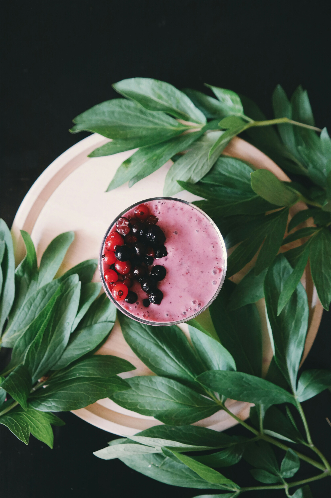

Quick Breakfast Smoothie

For those on the go!
This delicious breakfast smoothie is quick, fast and nutritious. Using your favorite
frozen smoothie mix along with your favorite chocolate protein shake, this smoothie will
ensure you have breakfast before starting your commute.
Ingredients
- Your favorite frozen smoothie mix (I use Dole Mixed Berry Mornings)
- Your favorite chocolate protein shake (I use Fairlife chocolate protein shake)
Optional
- I add in some powdered peanut butter (PB2)
Steps
- Add in all ingredients to a small blender and blend until smooth
- Enjoy!!